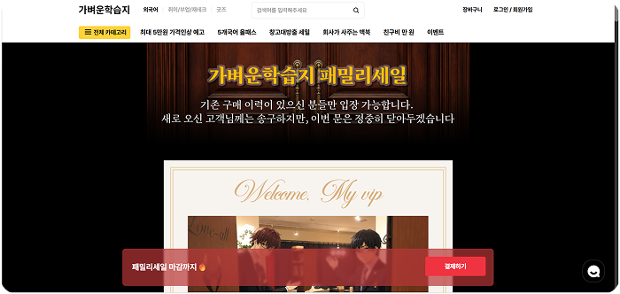
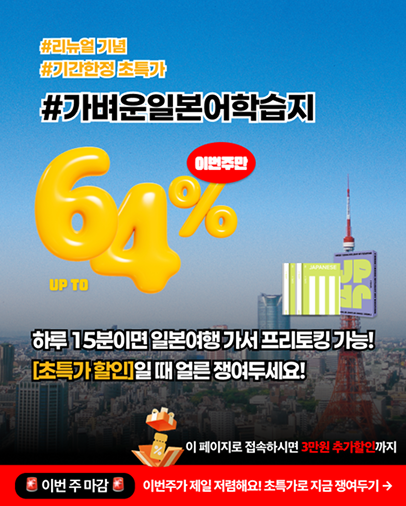
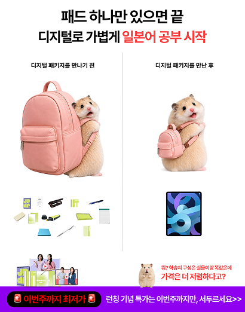
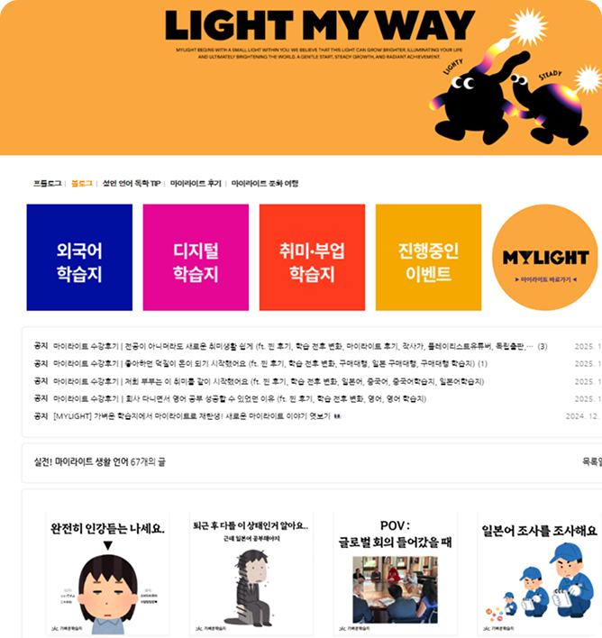

03
Promotion
기존 구매자와 미구매자의 상황에 맞춰 서로 다른 콘텐츠와 메시지로 구성했습니다.


데이원컴퍼니 마이라이트 교육콘텐츠부문 | 어학/IP | 마케팅팀 콘텐츠 마케터 인턴
* 상단 통계는 인턴 활동 내 담당 업무를 통해 확인한 성과 수치입니다.
강조 요소와 후킹 포인트에 따라 클릭과 구매 전환 성과가 달라짐을 소재로 확인했습니다.
리마케팅 소재, 할인율 강조
전환 우수 ROAS 319%
논타겟 소재, 이미지 강조
클릭 우수 CTR 1.29%
기존 구매자와 미구매자의 상황에 맞춰 서로 다른 콘텐츠와 메시지로 구성했습니다.

네이버 블로그 활성화를를 목표로 교육 콘텐츠를 작성하고, 검색
노출을 고려한 게시글을
운영했습니다.
2026.06.12 - 2026.06.26

실무 멘토님과의 수강 면담을 통해 지속적으로 성찰하고 피드백을 받았습니다.
Marketing Team leader
2026. 05. 04 - 2026. 06. 26
완성도와 속도 사이에서 균형을 잡는 게 어려웠습니다. 완성도에 집중하다 보니 작업이 자꾸 늦어졌기 때문입니다. 실제 성과를 보면, 할인율을 강조하거나 긴급성을 자극하는 카피가 있는 광고에서 구매율이 높았습니다. 디자인도 중요하지만 카피라이팅의 힘이 크다는 걸 느꼈고, 아무리 좋은 콘텐츠도 타이밍을 놓치면 소용없다는 것도 배웠습니다. 그래서 앞으로는 핵심 카피는 살리되, 정해진 시간 안에 완성하는 것을 우선순위로 두려고 합니다.
콘텐츠별로 어떤 의도로 만들었는지, 고객 반응은 어땠는지를 더 꼼꼼히 기록해두고 싶습니다. 블로그 조회수, 댓글, 참고했던 소재, 상품과 연결한 방식 등을 정리해뒀다면 어떤 주제와 메시지가 더 잘 통했는지 파악하기 쉬웠을 것 같습니다. 다음에 기회가 온다면 콘텐츠를 만들 때부터 "이걸 나중에 어떻게 평가할지"까지 미리 생각해두고, 어떤 방식이 효과적이었는지 더 적극적으로 분석해보고 싶습니다
콘텐츠 마케팅은 단순히 유행을 따라가거나 디자인만 예쁘게 하면 되는 게 아니라, 상품의 정보와 장점, 구매욕구까지 함께 고려해야 해서 생각보다 어려웠습니다. 하지만 어떤 요소가 구매욕구를 자극하는지 상품을 직접 분석해보며 활용해본 점이 좋았고, 주제가 명확한 상황에서 경쟁사 분석이나 자료 정리를 체계적으로 해본 것도 도움이 됐습니다. 인플루언서와 직접 연락하며 협업을 진행해보면서 광고 단가에 대한 개념도 잡을 수 있었습니다. 무엇보다 이번 인턴을 통해 진짜 회사 분위기를 느껴보고, 사내 메신저 사용이나 자료 공유 같은 실무적인 부분까지 경험해볼 수 있었습니다. 자료를 어떻게 전달해야 더 깔끔하고 보기 좋은지 고민하는 과정에서 업무 매너 같은 사회적인 부분도 자연스럽게 배울 수 있었고, 이런 경험 자체가 저에게는 정말 감사하고 뜻깊었습니다.